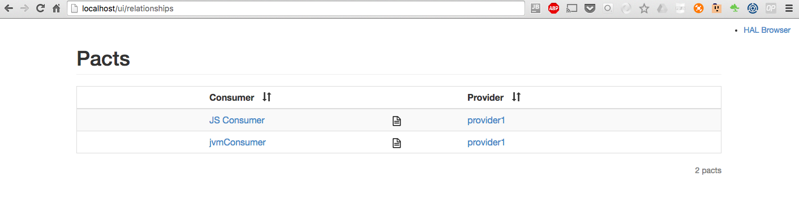
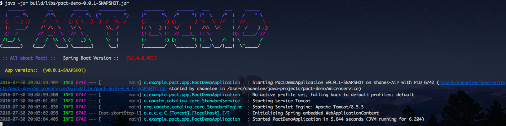
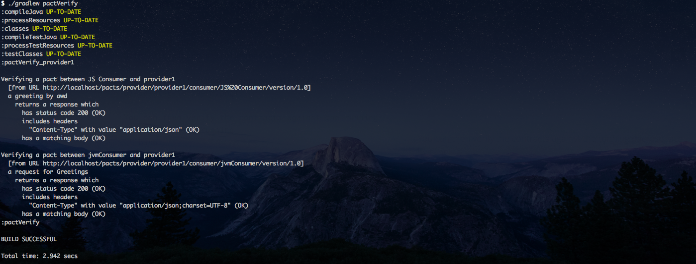

All about PACT....

PACT enables consumer driven contract testing, providing a mock service and DSL for the consumer project, and interaction playback and verification for the service provider project.
The Pact family of testing frameworks (Pact-JVM, Pact Ruby, Pact .NET, Pact Go, Pact.js, Pact Swift etc.) provide support for Consumer Driven
Contract Testing between dependent systems where the integration is based on HTTP (or message queues for some of the implementations).
See implementations
Dockerise...

To host your pacts, you need a pact broker.
The Pact Broker provides a repository for consumer driven contracts created using the pact gem.
It:
- solves the problem of how to share pacts between consumer and provider projects
- allows you to decouple your service release cycles
- provides API documentation that is guaranteed to be up-to date
- shows you real examples of how your services interact
- allows you to visualise the relationships between your services
There is a docker image already for pact broker, so i decided to create an image for the datastore; postgres.
You can find the image here
I also defined a docker compose file to orchestrate starting the two containers within the same network.
Docker Compose is an orchestration tool that makes spinning up multi-container applications effortless.
See the file below:
version: '2'
services:
postgres:
image: shanelee007/docker-pact-postgres
environment:
- POSTGRES_PASSWORD=ThePostgresPassword
- POSTGRES_USER=admin
ports:
- "5432:5432"
pact:
image: dius/pact_broker
environment:
- PACT_BROKER_DATABASE_NAME=pactbroker
- PACT_BROKER_DATABASE_PASSWORD=TheUserPassword
- PACT_BROKER_DATABASE_HOST=postgres
- PACT_BROKER_DATABASE_USERNAME=pactbrokeruser
ports:
- "80:80"
depends_on:
- postgres
# entrypoint: ./wait-for-it.sh postgres:5432 -- echo "postgres is up"
Docker command to run is
docker-compose --file docker-compose-pact.yml up --build
One simple command and you have a pact broker up and running locally at http://localhost/ui/relationships 😎
A closer look at PACT
I have created a github project that demonstrates Pact end-to-end.
You can find the project here
Steps are:
- Spin up pact broker using docker containers
- Start the microservice
- Run js consumer test using pact mock service and publish to pact broker
- Run jvm consumer and publish to pact broker
You should then see the contracts published at
http://localhost/ui/relationships
Pact broker relationships

You can then verify the contracts against the running microservice by running
./gradlew pactVerify

Console verification

Reports are outputted in json and markdown form. Which is very useful in your CI build pipeline.
Benefits
Pact is most valuable for designing and testing integrations where you (or your team/organisation/partner organisation) control the development of both the consumer and the provider, and the requirements of the consumer are going to be used to drive the features of the provider. It is a fantastic tool for developing and testing intra-organisation microservices.